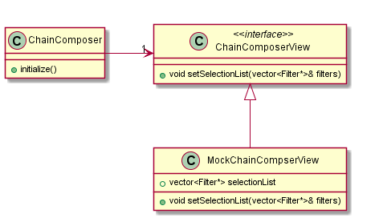
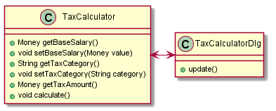
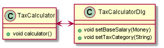

초라한 대화상자(The Humble Dialogbox)
Table of Contents
1 서론
평상시 코딩시 사용하는 대화상자에 대해 알아보기로 한다. 대화상자는 작은 견마와 비교해도 손색이 없다. 프로그램에서 무엇인가를 깔끔하게 해 내고 싶을 때 마다, 클래스를 하나 만들고, 이를 대화상자와 연결, 사용자에게 전달하고 싶은 내용을 보낸다. 이 작업을 쉽게 할 수 있는 툴 역시 많이 개발되어 있다. 대화상자위에 온갖 컴포넌트 같은 것들을 드래그앤 드랍으로 끌어다 놓고 이리저리 연결하면 끝이다. 삶이 편해 졌고, 단 하루만에 십수개의 대화상자를 찍어낼 수 있는 IDE의 지원도 막강해 졌다.
그러나, 여기에 빠져셔는 안된다. 이렇게 말한다고 해서 그간 IDE의 기능을 사용해 편리하게 코드를 만들어 왔던 사람들이 이 문서를 내려놓지 않았으면 한다. 사실, 나 역시 이러한 도구들에 푹 빠져 살아왔다. 물론 이러한 디자이너 툴들이 갖는 편이성은 인정한다. 아무도 지루한 코딩을 좋아하지 않을 것이다. 하지만, 대화상자를 쉽게 만들어내는 작업이 오히려 이것들을 손쉽게 사용하기는 더 어렵게 만든 것도 사실이다. 코드 생성기가 당신을 대신해서 모든 작업을 완수해 준다. 컴포넌트의 이벤트를 오버라이딩하고 대화상자 클래스 안에 상호작용에 대한 로직을 추가하는 것은 너무도 쉽다. 간단한 경우에만 말이다. 하지만, 점점 더 복잡한 작업을 이러한 식으로 해 가다 보면 어쩔 수 없이 생시는 다음과 같은 일련의 딜레마에 빠질 수 있다. "어쩔 수 없는" 목록중 일부는 다음과 같다.
- 대화상자 상호작용에 대해 몇가지 로직을 추가해야만 한다고 치자. 테스트 환경에 물릴 수 없었기 때문에, 버그를 만들었다.
- 유사한 대화상자를 또 만들기 시작했다. 이전에 했던 작업과 동일하다고 느끼기 시작했지만, 이런저런 결정을 내리면서 저수준의 컴포넌트 API를 가지고 오랜동안 작업했던 코드라 얼마나 비숫한지 파악하기가 쉽지 않다.
- 프로그램에 대한 인수테스트(acceptance test)를 시작했지만, GUI스크립팅 도구를 사용하지 않고도 하고 싶어졌다(AutoIt같은). 만일 UI 와 로직이 분리되었더라면, 테스트에 좀 더 쉽게 물릴 수 있었을 텐데.
이러한 문제들을 해결하는 가장 좋은 방법은 코드를 대화상자 클래스에 넣고 싶은 욕망을 억제하는 것이다. 손쉬운 방법으로, 일단 다른 클래스를 먼저 만들어 구현하고 난 다음, 대화상자 클래스를 나중에 만드는 것이다. 이런식으로 하게 되면, 2개의 클래스를 얻게 되는데, 하나는 테스트가 된 스마트 클래스이고, 또 다른 하나는 초라한 대화상자이다(이 문서에서는 초라한 대화상자의 로직을 실제 구현하고 있는 클래스/객체를 스마트클래스 혹은 스마트객체라고 명명한다).
2 Chain Composer 예제
필자로서는 글을 쓸 때 가장 힘든 것이 적절한 예제를 도출하는 것이다. 고객과 함께 개발을 해 오면서 필자가 얻게 된 독특한 해결방법들은 너무 현실적이고, 공유할 만한 것도 못되어서, 수년간 서로 다른 언어로 개발해 왔던 프로그램 중 작은 예를 하나 찾아 초라한 대화상자를 나타내 보도록 하겠다.
내 취미중 하나는 음악이고, 음악과 프로그래밍이 만나는 부분에서 흥미로운 부분이 있다. 바로 MIDI 이다. MIDI는 Musical Instrument Device Interface 의 약자이다. 신디사이저와 같은 전자 악기들이 상호 통신하게 하는 규약이다. 요즘에는 컴퓨터를 사용해 음악을 만드는 일들이 흔해 졌고, MIDI는 그 중심에 있다. 컴퓨터에서 악보를 만들어 나가면, 그 내용을 전자 악기로 MIDI를 통해 보내(즉 MIDI Event를 전송) 실시간으로 연주하게 만드는 것이다. 이런 류의 작업을 컴퓨터로 하다 보면, "효과"필터라는 개념을 만나게 되는데, 이것은 사용자가 입력한 악보 정보를 입력한 그대로가 아니라 컴퓨터가 약간 수정하여 출력함으로써 일련의 효과를 얻게 하는 것이다.
필자의 프로그램에서는 이러한 필터의 컬렉션이 존재한다. 이 프로그램의 메타포는 하나의 효과는 악보 이벤트를 줄줄이 연결하는 "필터 체인(chain of filter)"으로 정의된다. 필터를 체인으로 엮기 위해서, 프로그램에서는 현재 사용가능한 필터들의 목록을 보여주고, 사용자로 하여금 체인을 나타내는 순서가 있는 리스트에 채워나가도록 한다.

3 첫번째 단계
우선, 클래스를 하나 만든다. 대화상자 클래스를 먼저 만들었다면, 아마도 이럴 ComposeChainDialog 라고 명명했을 것이다. 결과적으로 이 대화상자 클래스를 만들겠지만, 지금은 ChainComposer라는 스마트클래스를 하나 만들 것이다. "테스트 먼저!" 접근을 시작해보자.
대화상자의 초기화를 먼저 해 보자. 대화상자가 표시될 때 어떤 데이터가 보여야 하는가? 기본적으로 왼쪽의 리스트 박스에 사용가능한 필터들의 목록이 보여야 할 것이다. 이것들을 어떻게 거기에 표시할 수 있는가? 그렇게 하기 위한 테스트를 먼저 작성해 보자.
Chain Composer의 첫번째 테스트는 다음과 같다.
TEST(initialize,ChainComposer) { MockChainComposerView view; ChainComposer composer(view); CHECK_LONGS_EQUAL(0, view.selectionList.size()); composer.initialize(); CHECK_LONGS_EQUAL(1, view.selectionList.size()); }
이 예제에서는 CppUnitLite라는 단위테스트 프레임웍을 사용하고 있다. 이 프레임웍은 클래스나 테스트스위트를 만들지 않아도 작은 독립테스트를 쉽게 만들 수 있게 해 준다. 위 테스트는 ChainComposer의 initialize 메소드에 대한 테스트이다. 이 클래스가 셋업되는 방식은, 뷰 클래스(view class)에 대한 참조를 넘기는 것이다. "initialize" 라는 메시지를 받으면 산택할 수 있는 필터들의 목록을 뷰(view)에 넘긴다. 이 경우, composer는 선택할 수 있는 단 하나의 필터 타입을 가지고 있는 것을 가정한다. composer는 이 필터를 가져다 뷰 클래스에 넘긴다. 그런다음 뷰 클래스(view class)가 이를 받는 지 확인할 수 있다.
이 테스트를 통과하기 위해, 작은 객체 구조를 구성해야 한다.

ChainComposerView 클래스는 대단히 유용하다. 순수가상함수만을 포함하고 있고, composer가 결과적으로 대화상자와 소통하는 "언어"를 정의하는 셈이다. 한편, 목업클래스인 MockChainComposerView는 위해 도입되었다. composer를 만들때 GUI클래스들을 다룰 필요없게 해준다.
일단 클래스구조가 자리잡으면 이를 사용해 테스트가 통과되게 할 수 있다. 좀더 구체적으로 말하자면, composer에 initialize()를 호출하면 뷰(view)가 알게되는 필터의 총 갯수는 1이되어야만 한다. 이렇게 되려면, composer는 필터의 vector 목록을 넘겨주어야 한다. 테스트 통과를 위해 composer의 initialize 메소드에 코드를 좀 추가하고 그런 다음, 목업 뷰(view)의 setSelectionList를 오버라이드하여 이 vector를 저장하도록 해 보자.
void ChainComposer::initialize(void) { filters.push_back(new ReverbFilter); // MIDI연주신호에 울림효과를 // 내는 기본 필터를 추가 view.setSelectionList(filters); } void MockChainComposer::setSelectionList(const std::vector<Filter*>& filters) { selectionFilters = filter; }
다시 원래의 UML로 돌아가서, 지금까지 구성된 것을 보면 다음과 같다.
여기까지의 작업으로, 추가적인 몇가지의 테스트와 함께 동작이 어떻게 이루어지는 정리해 볼 수 있겠다. 뷰(view)는 몇개의 필터를 가지는 필터목록으로 composer의 초기화를 할 수 있고, 그것들의 이름을 다시 가져 올 수 있다. 또, 필터들의 초기 세트가 어디서 오는지에 대한 부분도 명확해 졌다. 이 세트가 ChainComposer클래스에 파라메터로 넘어가야 할까 아니면 composer 가 다른 클래스에 요청하도록 해야 할 까? 사용자가 "ok"버튼을 누르면 어떤 일이 생겨야 할까? 이러한 각각의 경우를 다루기 위해, 이 스마트객체에 대해 몇가지 추가적인 테스트를 작성할 할 것이다. 그러나, 당장은 우리의 초라한 대화상자 아이디어에 대해 좀 더 구체화 하기 위한 또 다른 테스트 케이스를 먼저 다루어 보자.
대화상자를 만들 때, 대화상자에는 선택된 필터를 chain에 추가할 수 있는 버튼이 있어야 할 것이다. 이것의 기능은 어떻게 테스트 가능할까? 한가지 방법은 다음과 같다.
TEST(selectFilter, ChainCompser) { MockChainComposerView view; ChainComposer composer(view); composer.initialize(); composer.add(0); // 필터중 첫번째 것을 선택하는 메소드가 있다고 // 생각하고 호출한다. CHECK_LONGS_EQUAL(1, view.composedFilters.size()); }
여기서 "add" 메소드를 chain composer에 추가하였다. "add"라는 이름을 선택한 것은 대화상자에서도 동일한 이름의 버튼이 있게 될 것이기 때문이다. 필자는 composer클래스에 대한 동작에, 명령 혹은 "제스쳐"를 1:1로 매핑하기를 원한다. 그렇게 되면, 대화상자 클래스내에 작성해야 하는 코드는 정말로 단순해 진다. 단순히 이벤트에 대해 호출을 위임(delegate)하기만 하면 될 것이다. 이러한 작업을 몇번 하다가 보면, IDE의 대화상자 리소스 보다는 클래스 브라우져에 있는 메소드 이름들을 찾게 되는 일들이 더 많아질 것이다. 이 메소드의 이름은 대화상자가 실제로 해야만 하는 실제작업버젼이 된다.
"add" 메소드는 인자로 현재 선택된 필터의 인덱스를 받는다. composer가 이를 사용해 관련한 필터를 vector인 filters로 부터 가져와 chain vector에 추가한 다음, 이를 뷰(view)의 chain으로 설정한다. 이를 위해서는 다음의 테스트를 통과해야 한다.
void ChainCompser::add(int filterIndex) { chain.push_back(filters[filterIndex]); view.setChainList(chain); }
우리는 C++을 사용하고 있으므로, setChainList 를 ChainCompserView의 순수가상함수로 추가해야만 한다. 그런 다음, 이 메소드를 MockChainComposerView에서 오버라이드하는데, 구현은 ChainComposer::add 와 거의 유사하게 될 것이다.
4 지금까지 논의된 것을 다 합쳐서…
지금까지, 몇개의 메소드가 구현되었다. 한일을 돌아보자. 작성된 테스트들은 전형적인 것들이 아니다. 일반적으로 어떤 객체에 메시지를 보내는(다시말해 메소드를 호출하는) 테스트를 작성할 때는 반드시 반환값을 확인하여야 한다. 혹은 동작후에 상태를 객체에 질의하여 확인하여야 한다. 지금까지 구현한 테스트는 이런것과 차이가 있다. 스마트객체의 메소드를 호출하고 그것과 연결되어 있는 또 다른 객체(이 경우, 가짜 목업 객체인 MockChainComposerView의 객체)에 질의를 하였다. 이렇게 한 이유는 스마트객체와 그것의 뷰(view)간 내부프로토콜(internal protocol)을 만들어 나가는 과정이기 때문이다. setSelectionList 와 setChainList 는 이러한 프로토콜 중 하나이다.
스마트객체의 기능을 구성해 나갈때 염두여 두어야 할 사항이 몇가지 있다. 대화상자로 가는 모든 동작들이 스마트객체에 대한 동작으로 구성되어야 할 까? 사실, 그렇지는 않다. 예를 들어보자. "add" 동작에 대한 테스트를 시작할 때 조금더 생각해 보았다면, 사용자는 "add"를 누르기 전에 우선 리스트박스 항목중 하나를 선택해야만 한다는 사실을 깨달았을 수 도 있었다. "add"를 작업하기 전에, 스마트객체의 selectItem 메소드에 대한 테스트를 먼저 작업했을 수 도 있다. 그랬다면 현재 선택된 항목에 대해 동작하는 "add" 메소드의 테스트를 작성했을 수도 있었다. 그렇게 했더라면 더 나았을까? 필자의 생각은 "아니다". 선택된 인덱스를 얻어오는 작업은 쉽다. 얻어오기만 하면, 이를 add 메소드에 넘기면 될다. 그 어떤 추가적인 작업도 필요하지 않다. 대개 필자는 뷰(view)에서의 작업이 필요로 하지 않은 것들만 스마트객체에 넣는다. 목표는 스마트객체에 로직을 넣고 뷰(view)에는 로직이 없도록 하는 것이다.
스마트객체에 필요한 기능들을 모두 다 넣었다면, 실제 대화상자 클래스로 작업을 할 차례이다. 이를 위해, 대화상자는 뷰 인터페이스(여기서는 ChainComposerView)를 구현한다. 지금까지 구현해 온 것과 크게 다르지 않다. 각 동작 메소드들은 아주 작고 단순한 위임(delegation)일 뿐이었다. 뷰(view)가 데이터를 받는 모든 메소드는 순수한 set 메소드에 가깝게 된다(순수하다는 말은, 단순히 인자를 받아 내부 변수에 설정하는 setXXXX 함수와 같은 형태를 말한다).
void ChainComposerDialog::OnAdd() { composer->add(getListBox(IDC_SELECTIONLIST)->GetCurSel()); //MFC ListBox } void ChainComposerDialog::setSelectionList(const vector<Filter*>& filters) { setList(IDC_SELECTIONLIST, filters); } void ChainComposerDialog::setComposedList(const vector<Filter*>& filters) { setList(IDC_CHAINLIST, filters); } CListBox* ChainComposerDialog::getListBox(UINT idc) { return (CListBox*)(GetDlgItem(idc)); } void ChainComposerDialog::setList(int id, const vector<Filter*>& filters) { CListBox* list = getListBox(id); list->ResetContent(); foreach(Filter* filter, filters) { list->AddString(filter->getName()); } }
composer를 대화상자에서 사용할 수 있으려면, 인스턴스를 하나 만들고 저장해 두어야 한다.
ChainComposerDialog::ChainComposerDialog(CWnd* parent) : CDialog(ChainComposerDialog::IDD, parent) { composer = new ChainComposer(*this); } ChainComposerDialog::~ChainComposerDialog() { delete composer; } BOOL ChainComposerDialog::OnInitDialog() { CDialog::OnInitDialog(); composer->initialize(); return TRUE; }
기본적으로는 이것이 초라한 대화상자들을 만드는 방법의 전부이다. 지루한 작업이 조금 있어보이므로, 이제는 이렇게 할 만한 가치가 있는지 알아보기 위해 지금까지의 작업을 돌아보자.
대화상자의 모든 기능을 GUI클래스들로 부터 분리시켰다. 테스트 되지 않는 코드는 단순한 위임과 값의 세팅으로만 이루어진 얇은 경계에 존재하는 단순한 코드이다. 코드가 스마트객체에 존재하므로, 원하는 다른 방식으로 리팩토링을 할 수 있다. 무슨말이냐 하면, 리펙토링시에는 가장 중요한 것은 코드 변경이전과 동작이 동일한지를 *지속적*으로 확인하는 것인데, 코드를 바꿀 때 마다 테스트 할 수 있게 되었으므로 리펙토링이 *실제적*으로 가능하다는 얘기이다. 초라한 대화상자를 만들때, 사용자의 모든 로직이 테스트하에 있게 되었으므로, 스마트객체들간의 반복되는 복제부분은 거의 없게 된다(?). Mike Hill은 이러한 스마트객체들을 구성하게 되면 종종, 이들을 중첩시켜서 조금 더 복잡한 대화상자에서의 상호작용도 구성할 수 있다 한다.
Model/View/Controller, Model/View/Presentaion 혹은 Presentation/Access/Control 과 같은 사용자 인터페이스 디자인 패턴들을 많이 봐 왔다면(MFC나 Swing은 첫번째의 축약버젼을 사용한다), 스마트 객체가 뷰 클래스(view class)에 데이터를 밀어넣고 있다는 사실을 알았을 것이다. 이는 대다수 UI 프레임웍에서의 경향과 정확히 정반대이다. 왜 이렇게 했을까? 필자에게는 이것이 오히려 자연스럽게 느껴지지만, 독자를 위해 좀 더 구체적인 정의를 내려보도록 하겠다. 또 다른 예제를 보자.

UI 를 구성하는 전형적인 방법을 보고 있다. "model" 클래스와 "view" 클래스이다. model 클래스에서 변경이 발생하면, view 클래스의 update 를 호출한다. 그러면 view 는 다시 표시에 필요한 모든 데이터를 model 로 부터 가져온다. 처음에는 이런식의 구성이 잘 동작하지만, view 클래스에 이런 저런 동작들이 자꾸만 들어가게 된다. 왜 일까? 편하기 때문이다. view 클래스는 이미, getXXX 나 setXXX 와 같은 것들이 가능한 model 에 대한 참조 혹은 포인터를 가지고 있으니 말이다. 또 다른 가능한 상황은, 다른 시스템의 부분들이 모르게 조세 시스템 자체만을 임의로 복잡하게 만들 수 도 있다. 다시말해, 감당해야 할 비용과 의구심은 끝도 없이 증가하게 될 것이다.
이 예를 초라한 대화상자개념을 넣은 것과 비교해 보자.

시스템의 로직은 여전히 캡슐화되어 있다. 대화상자 클래스에 로직을 넣는 일은 (이제) 아주 어렵다. 실제로 여러분도 이런식으로 작업해야 한다. 대화상자에게 자신이 알아야 할 필요가 있을 때 그것을 알려주기만 하면 되기 때문에 더 많은 제어권을 가지고 있다.
5 결론
정리하면,
- 스마트객체에 대한 클래스를 만를고, 뷰에 대한 인터페이스를 만든다. 이 뷰를 스마트클래스에 전달한다.
- 스마트객체에 대한 구현을 개발하고 먼저 테스트 한다. 테스트는 목업 뷰에 대해서 수행한다.
- 실제 대화상자 클래스를 만들고 거기에 1에서 만든 인터페이스를 구현한다. 대화상자에 대한 동작은 스마트객체로 위임하는 식으로 구현한다. 스마트객체로 부터 대화상자로의 호출은 단순한 setter메소드로 구현된다.
이 단계를 따르면, 최종적으로 테스트된 코드를 얻게 되며, 인수테스트(acceptance test)를 프로그램적으로 수행할 수 있는 훌륭한 인터페이스가 생긴다.